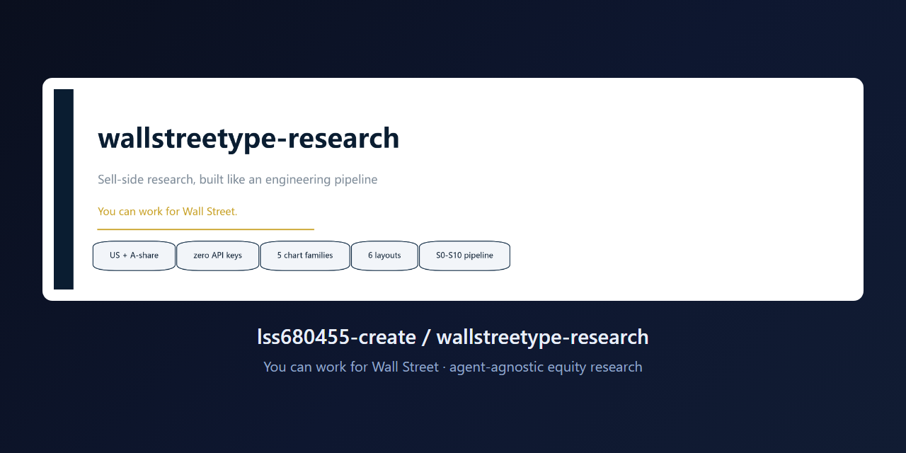
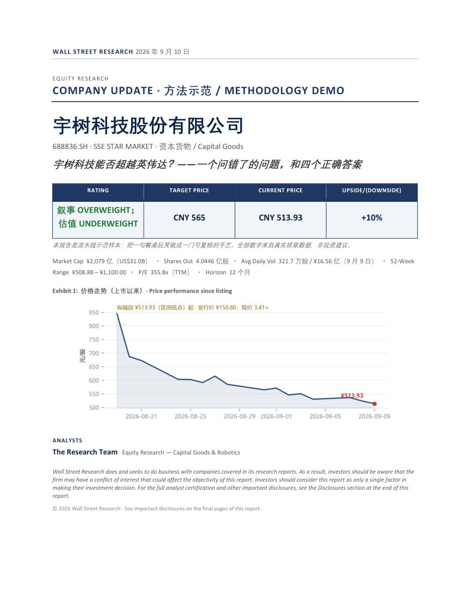
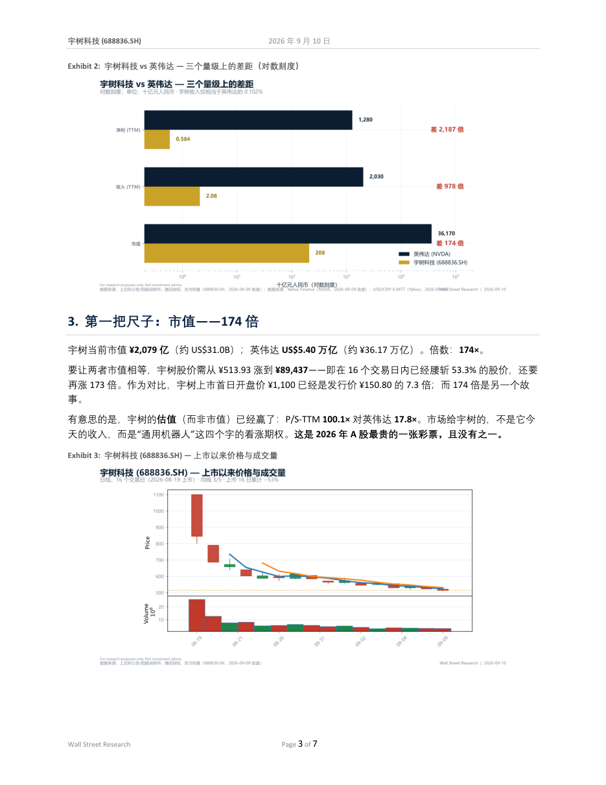
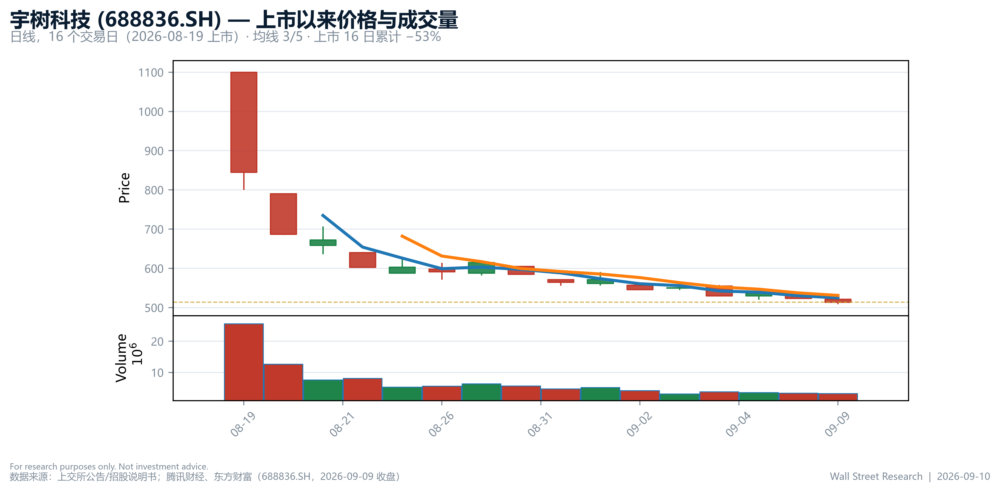

wallstreetype-research
旗舰 · FlagshipYou can work for Wall Street.
把卖方研报生产流程工程化的开源工具箱：给一个标的，产出一份带封面、评级框、Key Data、编号章节、机构级图表的研报，导出 Word 与 PDF。流程与模型解耦——任何能读写文件、能跑脚本的 AI agent 都能驱动它。
- S0–S10 · 11 阶段
- 16 角色 · 4 小组
- 14 道质量门禁
- 106 条方法 · 10 个 playbook
- 6 套机构版式
- 5 类机构级图表
- 零 API key



端到端案例：宇树科技 688836.SH vs 英伟达 NVDA —— 从取数到排版成书（7 页 PDF · Word · Markdown 源 · 6 张图表 · 原始数据 · 复现脚本）。